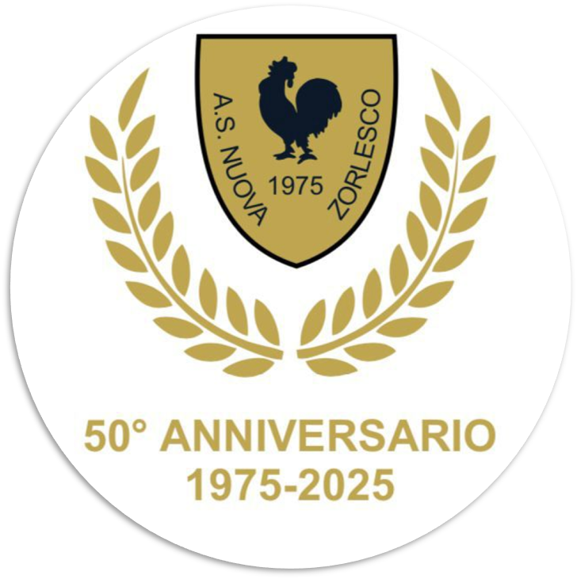
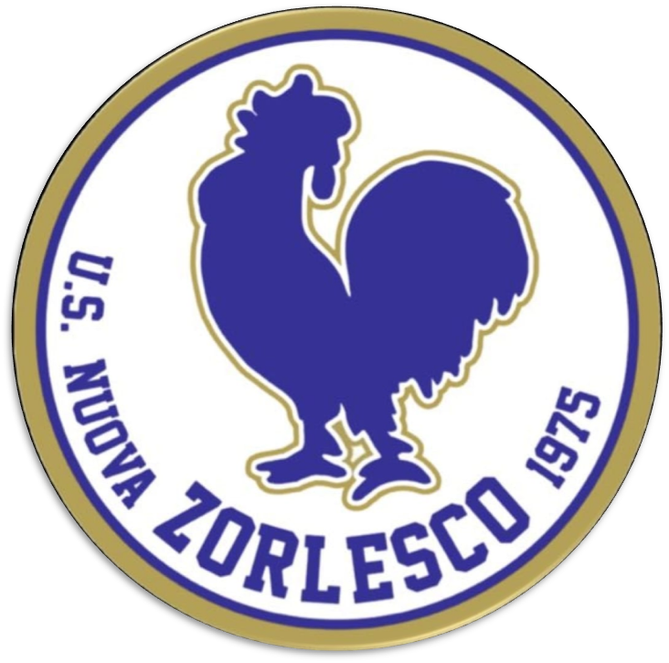

 U.S. Nuova Zorlesco 1975 
News
Calendario Eventi
Juniores U19
| Data | Evento |
|---|---|
| 21 settembre | Somaglia🛫 |
| 28 settembre | Virtus Maleo🛫 |
| 5 ottobre | Fissiraga🏠 |
| 12 ottobre | Cavenago🛫 |
| 19 ottobre | Riposo |
| 26 ottobre | K2 Caselle🛫 |
| 2 novembre | Esorsamma🏠 |
| 9 novembre | Nuova Lodi🛫 |
| 16 novembre | Aurora Sec.🏠 |
| 23 novembre | S.Biagio🛫 |
| 30 novembre | Graffignana🏠 |
| 7 dicembre | S.Bernardo🏠 |
| 18 gennaio | Laudense🛫 |
| 25 gennaio | Somaglia🏠 |
| 1 febbraio | Virtus Maleo🏠 |
| 8 febbraio | Fissiraga🛫 |
| 15 febbraio | Cavenago🏠 |
| 22 febbraio | Riposo |
| 1 marzo | K2 Caselle🏠 |
| 8 marzo | Eurosamma🛫 |
| 15 marzo | Nuova Lodi🏠 |
| 22 marzo | Aurora Sec.🛫 |
| 29 marzo | S.Biagio🏠 |
| 5 aprile | Graffignana🛫 |
| 12 aprile | S.Bernardo🛫 |
| 26 aprile | Laudense🏠 |
2a Categoria
| Data | Evento |
|---|---|
| 08 settembre | A. Miradolo 🛫 |
| 15 settembre | Graffignana🛫 |
| 22 settembre | Borghetto🏠 |
| 29 settembre | Mairago🛫 |
| 06 ottobre | Chignolese🛫 |
| 13 ottobre | Esorsamma🏠 |
| 20 ottobre | Cavenago🛫 |
| 27 ottobre | Guardamiglio🏠 |
| 03 novembre | Or. Livraga🛫 |
| 10 novembre | S. Luigi🏠 |
| 17 novembre | Casoni🛫 |
| 24 novembre | Sup. Muzza🏠 |
| 01 dicembre | Sanmartinese🛫 |
| 08 dicembre | Deltapo🏠 |
| 15 dicembre | Aurora Sec.🛫 |
| 12 gennaio | A. Miradolo🏠 |
| 19 gennaio | Graffignana🏠 |
| 26 gennaio | Borghetto🛫 |
| 02 febbraio | Mairago🏠 |
| 09 febbraio | Chignolese🏠 |
| 16 febbraio | Esorsamma🛫 |
| 23 febbraio | Cavenago🏠 |
| 02 marzo | Guardamiglio🛫 |
| 09 marzo | Or. Livraga🏠 |
| 16 marzo | S. Luigi🛫 |
| 23 marzo | Casoni🏠 |
| 30 marzo | Sup. Muzza🛫 |
| 06 aprile | Sanmartinese🏠 |
| 13 aprile | Deltapo🛫 |
| 27 aprile | Aurora Sec.🏠 |
Risultati
Vuoi vedere i risultati in tempo reale? Clicca qui!